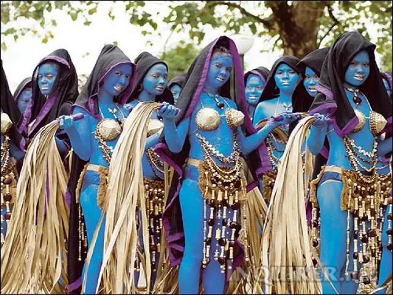
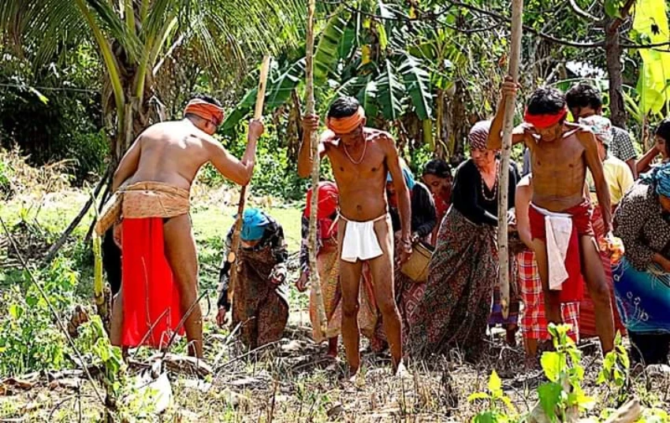
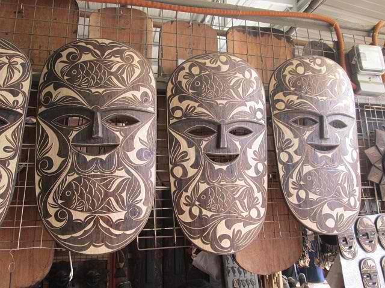
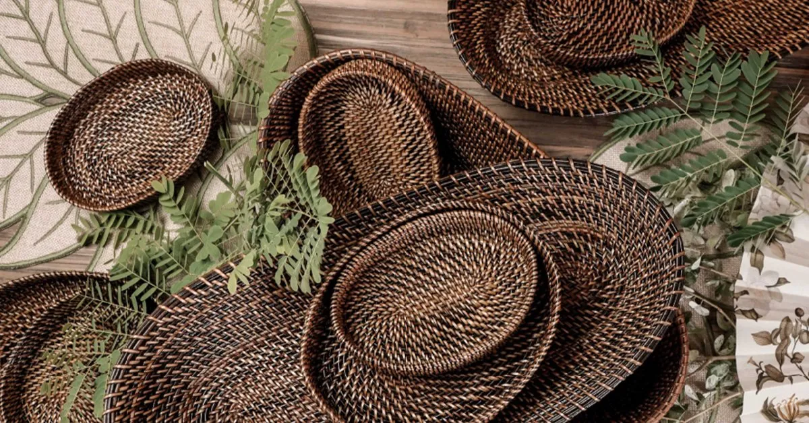

TRADITION - PALAWAN 
Tagbanua are one of the oldest ethnic groups. They practice shifting cultivation of upland rice which is considered as a divine gift, they are also known for their rice wine ritual called "Pagdiwata". The cult of the dead is the key to the religious system of the Tagbanua, who also believe in countless deities found in the natural environment.
BELIEFS - PALAWAN 
The principle on which the Palawan base their lives is called ingasiq, meaning 'compassion'. This underlies all their actions and emphasizes the importance of behaving with generosity and sympathy towards others. Their ceremonies, prayers, chanting, and healing dances are all part of what they call adat et kegurangurangan, or ‘the customs of the ancestors’.
ARTS (WOOD CARVING)
- PALAWAN 
Palawan is home to many skilled woodcarvers who create a wide range of items, including figurines, utensils, and furniture. The carvings often feature traditional designs and symbols.
ARTS(Nito basketry) - PALAWAN 
Nito is a type of vine that grows in Palawan and is used for creating baskets and other decorative items. The baskets are woven in a variety of sizes and shapes, often featuring intricate designs and patterns.
ARTS(Banig (mat) weaving)
- PALAWAN 
Banig weaving is a traditional craft in Palawan that uses pandan leaves to create intricate mats and baskets. These mats are often used for sleeping, sitting, and even as a decorative element in homes.